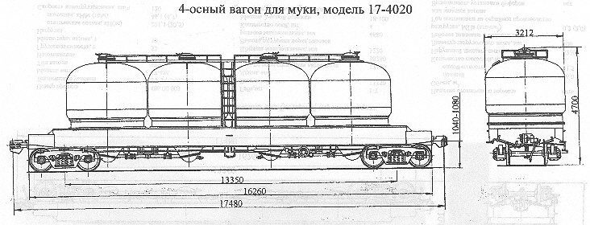

Назначение: для бестарной перевозки муки
Параметры
| Номер проекта | 4020.00.000 |
| Технические условия | ТУ 24.05.852-84 |
| Модель вагона | 17-4020 |
| Тип вагона | 972 |
| Изготовитель | СВЗ |
| Грузоподъемность, т | 52 |
| Масса тары вагона, т | 33,8 |
| Нагрузка: статическая осевая, кН(тс) |
210,2(21,45) |
| погонная, кН/м(тс/м) | 48(4,9) |
| Скорость конструкционная, км/ч | 120 |
| Габарит | 1-Т |
| База вагона, мм | 13350 |
| Длина, мм: по осям сцепления автосцепок |
17480 |
| по концевым балкам рамы | 16260 |
| Ширина максимальная, мм | 3212 |
| Высота от уровня верха головок рельсов максимальная, мм | 4700 |
| Количество осей, шт. | 4 |
| Модель 2-осной тележки | 18-100 |
| Наличие переходной площадки | нет |
| Наличие стояночного тормоза | есть |
| Объем полный, м3 | 86,0 |
| Объем одной емкости, м3 | 21,5 |
| Количество емкостей, шт. | 4 |
| Наружный диаметр емкости, мм | 3212 |
| Диаметр загрузочного люка, мм | 400 |
| Рабочее давление в емкости при разгрузке, МПа(кгс/см2) | 0,2(2,0) |
| Год постановки на серийное производство | |
| Возможность установки буфера | нет |